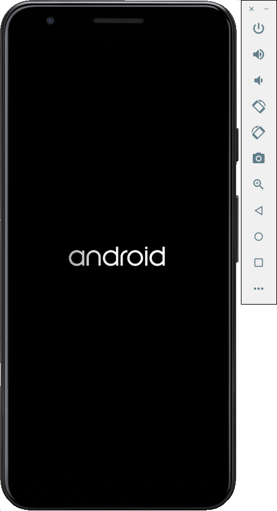
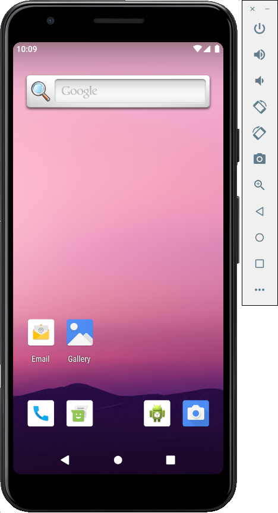
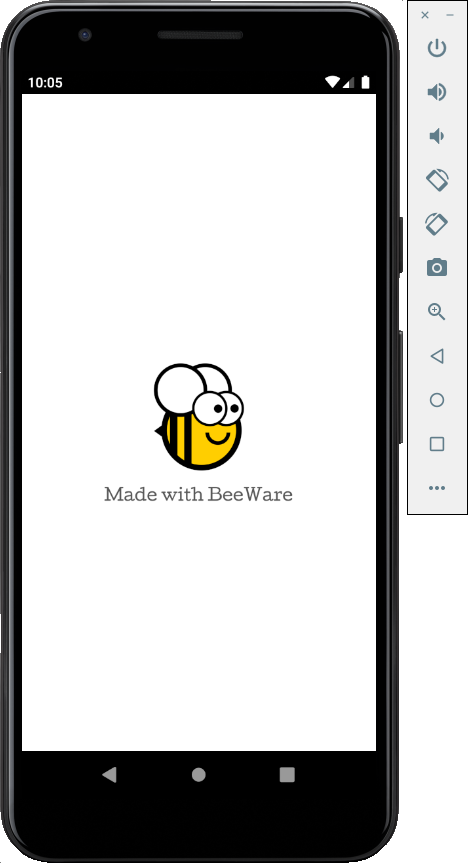
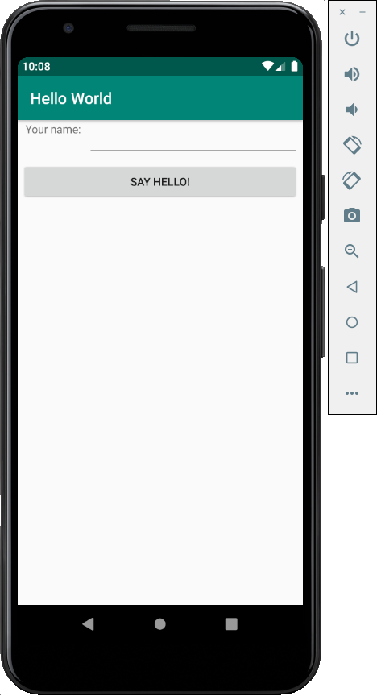

Esercitazione 5 - Il mobile: Android¶
Ora prenderemo la nostra applicazione e la distribuiremo come applicazione Android.
Il processo di distribuzione di un'applicazione su Android è molto simile a quello di un'applicazione desktop. Briefcase gestisce l'installazione delle dipendenze per Android, tra cui l'SDK Android, l'emulatore Android e un compilatore Java.
Creare un'applicazione Android e compilarla¶
Per prima cosa, eseguire il comando create. Questo scarica un modello di
applicazione Android e vi aggiunge il codice Python.
(beeware-venv) $ briefcase create android
[helloworld] Generating application template...
Using app template: https://github.com/beeware/briefcase-android-gradle-template.git, branch v0.3.18
...
[helloworld] Installing support package...
No support package required.
[helloworld] Installing application code...
Installing src/helloworld... done
[helloworld] Installing requirements...
Writing requirements file... done
[helloworld] Installing application resources...
...
[helloworld] Removing unneeded app content...
Removing unneeded app bundle content... done
[helloworld] Created build/helloworld/android/gradle
(beeware-venv) $ briefcase create android
[helloworld] Generating application template...
Using app template: https://github.com/beeware/briefcase-android-gradle-template.git, branch v0.3.18
...
[helloworld] Installing support package...
No support package required.
[helloworld] Installing application code...
Installing src/helloworld... done
[helloworld] Installing requirements...
Writing requirements file... done
[helloworld] Installing application resources...
...
[helloworld] Removing unneeded app content...
Removing unneeded app bundle content... done
[helloworld] Created build/helloworld/android/gradle
(beeware-venv) C:\...>briefcase create android
[helloworld] Generating application template...
Using app template: https://github.com/beeware/briefcase-android-gradle-template.git, branch v0.3.18
...
[helloworld] Installing support package...
No support package required.
[helloworld] Installing application code...
Installing src/helloworld... done
[helloworld] Installing requirements...
Writing requirements file... done
[helloworld] Installing application resources...
...
[helloworld] Removing unneeded app content...
Removing unneeded app bundle content... done
[helloworld] Created build\helloworld\android\gradle
Quando si esegue briefcase create android per la prima volta, Briefcase
scarica un JDK Java e l'SDK Android. Le dimensioni dei file e i tempi di
download possono essere considerevoli; il download può richiedere un po' di
tempo (10 minuti o più, a seconda della velocità della connessione a Internet).
Al termine del download, verrà richiesto di accettare la licenza Android SDK di
Google.
Una volta completata questa operazione, nel nostro progetto avremo una cartella
buildhelloworld\android\gradle, che conterrà un progetto Android con una
configurazione di compilazione Gradle. Questo progetto conterrà il codice
dell'applicazione e un pacchetto di supporto contenente l'interprete Python.
Possiamo quindi usare il comando build di Briefcase per compilare questo file
in un'applicazione Android APK.
(beeware-venv) $ briefcase build android
[helloworld] Updating app metadata...
Setting main module... done
[helloworld] Building Android APK...
Starting a Gradle Daemon
...
BUILD SUCCESSFUL in 1m 1s
28 actionable tasks: 17 executed, 11 up-to-date
Building... done
[helloworld] Built build/helloworld/android/gradle/app/build/outputs/apk/debug/app-debug.apk
(beeware-venv) $ briefcase build android
[helloworld] Updating app metadata...
Setting main module... done
[helloworld] Building Android APK...
Starting a Gradle Daemon
...
BUILD SUCCESSFUL in 1m 1s
28 actionable tasks: 17 executed, 11 up-to-date
Building... done
[helloworld] Built build/helloworld/android/gradle/app/build/outputs/apk/debug/app-debug.apk
(beeware-venv) C:\...>briefcase build android
[helloworld] Updating app metadata...
Setting main module... done
[helloworld] Building Android APK...
Starting a Gradle Daemon
...
BUILD SUCCESSFUL in 1m 1s
28 actionable tasks: 17 executed, 11 up-to-date
Building... done
[helloworld] Built build\helloworld\android\gradle\app\build\outputs\apk\debug\app-debug.apk
Gradle può sembrare bloccato
Durante il passaggio briefcase build android, Gradle (lo strumento di
creazione della piattaforma Android) stampa CONFIGURING: 100% e sembra non
fare nulla. Non preoccupatevi, non è bloccato: sta scaricando altri componenti
dell'SDK Android. A seconda della velocità della connessione a Internet,
potrebbero essere necessari altri 10 minuti (o più). Questo ritardo dovrebbe
verificarsi solo la prima volta che si esegue build; gli strumenti vengono
memorizzati nella cache e nella compilazione successiva verranno utilizzate le
versioni memorizzate nella cache.
Eseguire l'applicazione su un dispositivo virtuale¶
Ora siamo pronti a eseguire la nostra applicazione. È possibile utilizzare il
comando run di Briefcase per eseguire l'applicazione su un dispositivo
Android. Cominciamo con l'esecuzione su un emulatore Android.
Per eseguire la vostra applicazione, eseguite briefcase run android. In questo
modo, verrà richiesto un elenco di dispositivi su cui è possibile eseguire
l'applicazione. L'ultima voce sarà sempre un'opzione per creare un nuovo
emulatore Android.
(beeware-venv) $ briefcase run android
Select device:
1) Create a new Android emulator
>
(beeware-venv) $ briefcase run android
Select device:
1) Create a new Android emulator
>
(beeware-venv) C:\...>briefcase run android
Select device:
1) Create a new Android emulator
>
Ora possiamo scegliere il dispositivo desiderato. Selezionate l'opzione "Crea un
nuovo emulatore Android" e accettate la scelta predefinita per il nome del
dispositivo (beePhone).
Briefcase run avvierà automaticamente il dispositivo virtuale. Quando il
dispositivo si avvia, si vedrà il logo di Android:

Avvio del dispositivo virtuale Android
Una volta terminato l'avvio del dispositivo, Briefcase installerà l'applicazione sul dispositivo. Verrà visualizzata brevemente una schermata di avvio:

Dispositivo virtuale Android completamente avviato, sulla schermata del launcher
L'applicazione si avvia. Durante l'avvio dell'applicazione verrà visualizzata una schermata iniziale:

Schermata iniziale dell'app
L'emulatore non si è avviato!
L'emulatore Android è un software complesso che si basa su una serie di caratteristiche dell'hardware e del sistema operativo, caratteristiche che potrebbero non essere disponibili o abilitate su macchine più vecchie. In caso di difficoltà nell'avvio dell'emulatore Android, consultare la sezione Requisiti e raccomandazioni della documentazione per sviluppatori Android.
Al primo avvio, l'applicazione deve scompattarsi sul dispositivo. Questa operazione può richiedere alcuni secondi. Una volta scompattata, verrà visualizzata la versione Android dell'applicazione desktop:

Applicazione demo completamente lanciata
Se non si riesce a vedere l'avvio dell'applicazione, potrebbe essere necessario
controllare il terminale in cui è stato eseguito briefcase run e cercare
eventuali messaggi di errore.
Mentre l'applicazione è in esecuzione, si vedranno molti messaggi nella console. Si tratta di un flusso di log dell'applicazione dall'emulatore. Digitando Ctrl+C nel terminale, si interromperà il flusso di informazioni nella console, ma non si chiuderà l'emulatore. In questo modo è possibile testare le nuove modifiche senza riavviare l'emulatore.
In futuro, se si vuole eseguire su questo dispositivo senza usare il menu, si
può fornire il nome dell'emulatore a Briefcase, usando briefcase run android -d
@beePhone per eseguire direttamente sul dispositivo virtuale.
Eseguire l'applicazione su un dispositivo fisico¶
Se si dispone di un telefono o di un tablet Android fisico, è possibile collegarlo al computer con un cavo USB e quindi utilizzare la valigetta per puntare al dispositivo fisico.
Android richiede la preparazione del dispositivo prima di poterlo utilizzare per lo sviluppo. È necessario apportare due modifiche alle opzioni del dispositivo:
- Abilitare le opzioni per gli sviluppatori
- Abilitare il debug USB
I dettagli su come apportare queste modifiche sono disponibili nella documentazione per sviluppatori Android.
Una volta completati questi passaggi, il dispositivo dovrebbe apparire
nell'elenco dei dispositivi disponibili quando si esegue briefcase run
android.
(beeware-venv) $ briefcase run android
Select device:
1) Pixel 3a (94ZZY0LNE8)
2) @beePhone (emulator)
3) Create a new Android emulator
>
(beeware-venv) $ briefcase run android
Select device:
1) Pixel 3a (94ZZY0LNE8)
2) @beePhone (emulator)
3) Create a new Android emulator
>
(beeware-venv) C:\...>briefcase run android
Select device:
1) Pixel 3a (94ZZY0LNE8)
2) @beePhone (emulator)
3) Create a new Android emulator
>
Qui possiamo vedere un nuovo dispositivo fisico con il suo numero di serie
nell'elenco di distribuzione - in questo caso, un Pixel 3a. In futuro, se si
vuole eseguire su questo dispositivo senza usare il menu, si può fornire il
numero di serie del telefono a Briefcase (in questo caso, briefcase run android
-d 94ZZY0LNE8). In questo modo si eseguirà direttamente sul dispositivo, senza
richiedere nulla.
Il mio dispositivo non appare!
Se il dispositivo non compare in questo elenco, significa che non è stato attivato il debug USB (oppure che il dispositivo non è collegato!).
Se il dispositivo appare, ma è elencato come "Dispositivo sconosciuto (non
autorizzato per lo sviluppo)", la modalità sviluppatore non è stata abilitata
correttamente. Eseguire nuovamente i passaggi per abilitare le opzioni per gli
sviluppatori e
rieseguire briefcase run android.
Prossimi passi¶
Ora abbiamo un'applicazione sul nostro telefono! C'è un altro posto dove possiamo distribuire un'applicazione BeeWare? Vai a Tutorial 6 per scoprirlo…